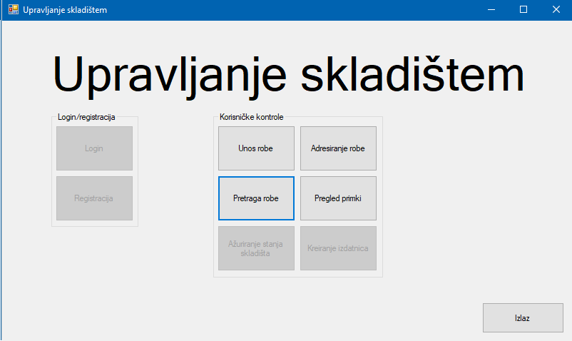

Uključenjem aplikacije prikazan je glavni meni na kojemu je moguće koristiti ponuđene kontrole za funkcioniranje aplikacije. Svaka od ponuđenih tipki otvara novi prozor koji odgovara pojedinoj funkciji aplikacije.
